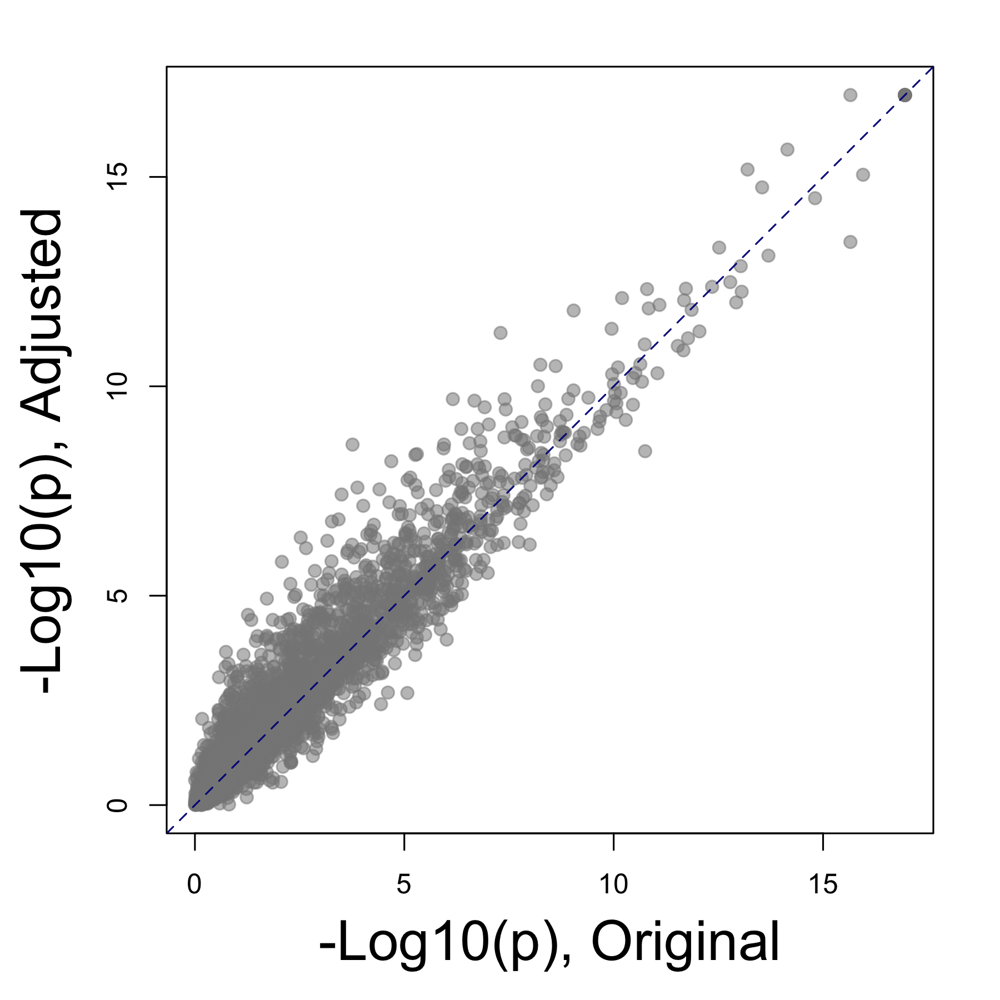
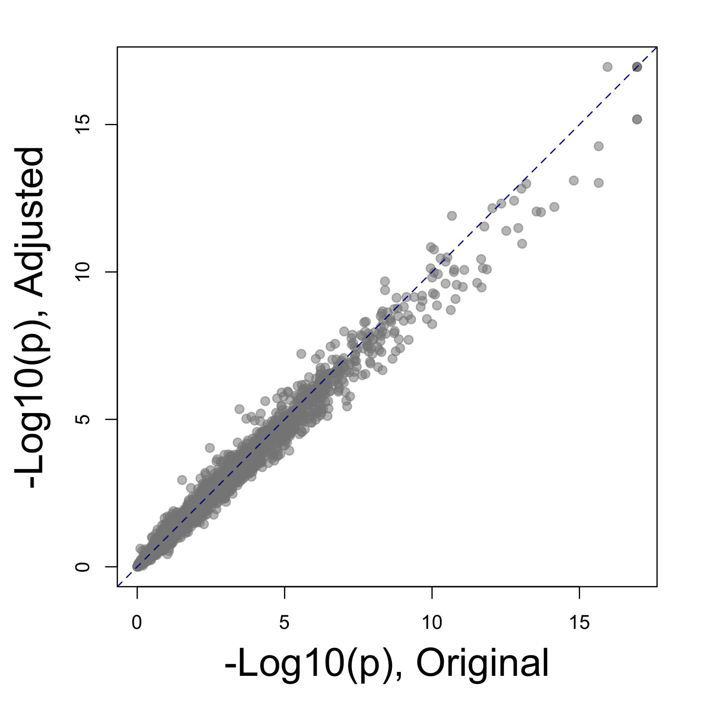
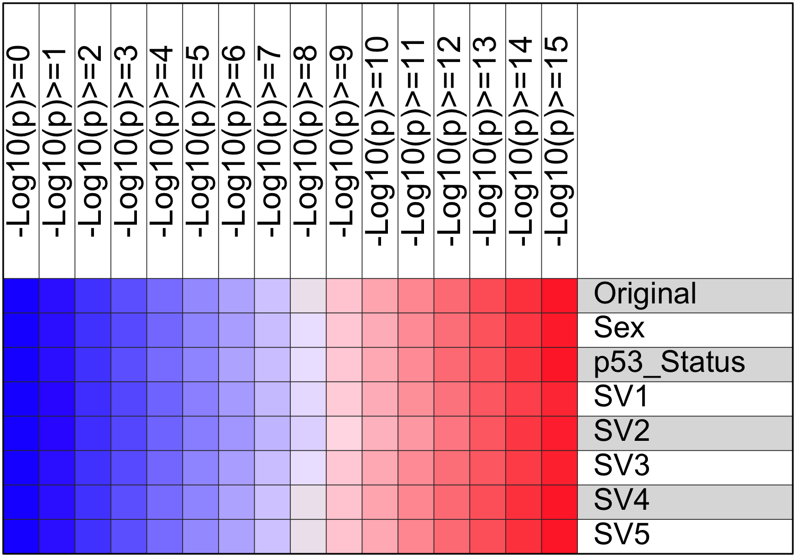

Introduction: This analysis applies the Bioconductor SVA (Surrogate Variable Analysis) package and other methods to evaluate and adjust for known or unknown batch effect. It includes the following steps:
- This analysis requires an original data matrix and sample description with one or multiple features, and parameters including
- One or multiple features as variable(s) of interest
- Zero or one feature known to be the source of batch effect
- The number of surrogate variables (default=5) to be identified from the data matrix
- The sva function will first identify the given number of surrogate variables, each accounting for a portion of the total data variation. These surrogate variables will be evaluated as below.
- The association between each sample feature and each surrogate variable will be evaluated by ANOVA (categoral feature) or Pearson’s correlation (numeric feature)
- By grouping samples according variable(s) of interest, 2 sets of 1-way ANOVA p values, using the data matrix and the matrix adjusted for all surrogate variables, will be compared to evaluate whether removing potential batch effect will improve the signal/noise ratio in the data set.
- A new data matrix will be generated after adjusting for batch effect.
- If a sample feature is known to be the source of batch effect, the original matrix will be adjusted for it using ComBat (categoral variable) or limma (continuous variable). It will be adjusted for all surrogate variables instead otherwise.
- Same as the last step, the impact of data adjustment will be evaluated with 1-way ANOVA of samples grouped by variable(s) of interest.
- An extra step will be carried out to adjust the original data matrix for all sample features and surrogate variables one by one, and evaluate the consequence.
Description
Project
Comparison between cell lines from 9 different cancer tissues (NCI-60); GSE5949
PubMed
Reinhold WC, Reimers MA, Lorenzi P, Ho J et al. Multifactorial regulation of E-cadherin expression: an integrative study. Mol Cancer Ther 2010 Jan;9(1):1-16. PMID: 20053763.
Experimental design
Comparison between cell lines from 9 different cancer tissue of origin types (Breast, Central Nervous System, Colon, Leukemia, Melanoma, Non-Small Cell Lung, Ovarian, Prostate, Renal) from NCI-60 panel
Analysis
Evaluate and adjust batch effect of p53 status. Only a subset of genes with high between-sample variance was used as a demo.
Samples and variable(s) of interest
A total of 60 samples and 3 sample features was provided by the input data. Click here to see a full list of samples and samples features.
- Sample feature(s) to be studied by this project (variables of interest): Organ
- Sample feature with potential batch effect: p53_Status
- All other known sample feature(s): Sex
Table 1 All sample features provided by the input data, which could include 1 or many variables of interest and 0 or 1 confounding variable known to be responsible for the batch effect in data. (Sample_feature: all sample features given in the input data; Num_level: number of unique values of each sample feature; Variable_of_interest: whether this sample feature is a variable of interest in this project; and Batch_effect whether this sample feature is a known source of batch effect)
| Organ |
factor |
9 |
TRUE |
FALSE |
| Sex |
factor |
3 |
FALSE |
FALSE |
| p53_Status |
factor |
3 |
FALSE |
TRUE |
Identification and evaluation of surrogate variables
The sva() function was used to identify surrogate variables from the original data matrix. Each surrogate variable is responsible for part of the overall data variation, and may or may not be related to known sample features, such as any variables of interest or experiment batch. Since each sample was assigned a value of each surrogate variable by the sva function, these values were used to evaluate the association between surrogate variables and sample features using ANOVA for categoral variables or Pearson’s correlation for numeric variables.
Table 2 ANOVA p value for the association between surrogate variables and sample features.
| Organ |
0.00 |
0.000 |
0.000 |
0.07 |
0.029 |
| Sex |
0.56 |
0.096 |
0.052 |
0.69 |
0.620 |
| p53_Status |
0.79 |
0.089 |
0.850 |
0.61 |
0.810 |
The f.pvalue() function was used to run ANOVA tests using the variable(s) of interest and original data matrix, so each gene got an ANOVA p value. The test was then run again after adjusting the data matrix for surrogate variables that were not significantly associated with the surrogate variables (p < 0.01). The goal is to evaluate if the global statistical power was improved after the confounding effect of surrogate variables was removed.

Figure 1. Comparison of the ANOVA p values obtained using the original data matrix and the matrix adjusted by surrogate variables not significantly associated with any variable(s) of interest.
Adjust data for batch effect
Since sample feature, p53_Status, was known to cause batch effect in the data, the original data matrix was then adjusted to remove its effect using the ComBat method if it is a categoral variable or the limma method if it is a numerical variable

Figure 2. Same plot as Figure 1, except that the y-axis p values were based on the data adjusted by the known batch effect variable using the ComBat (categoral) or limma (numeric) method.
Evaluate all variables
Finally, the confounding or batch effect of all sample features and surrogate variables was evaluated one by one, after removing it from the original data matrix.

Figure 3. After adjusting the original data for each of the sample features or surrogate variables, ANOVA p values were calculated again for each gene. The numbers of significant genes obtaining from each adjusted data matrix were compared to the numbers of genes obtained from the original matrix. The color in this plot represents relative frequency of genes (red = more). Clcik
here to view table of gene counts.
END OF DOCUMENT